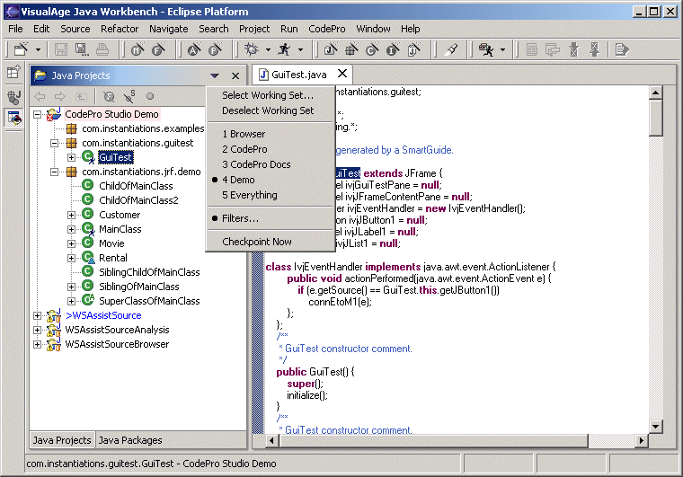
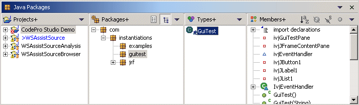

VA Java PerspectiveSelect the "Perspective | Open" command and choose "VisualAge Java Workbench". This will open a new perspective with three views - Java Projects, Java Packages and Outline - stacked up horizontally across the top of the window, a editing area in the middle, and the standard Eclipse Task, Search & Console views at the bottom (plus our Scheduler view). The default orientation used by the perspective - vertical or horizontal - can be set on the Browsers options page. Note: The Packages view is not available under Eclipse 3.0. In vertical mode, the Projects, Packages and Outline view will be stacked up on the left side of the window. These three views may also be dragged around and repositioned in true Eclipse style. The Packages view will automatically flip from horizontal to vertical orientation based upon its dimensions. All of these views support the VA Java "click-to-edit" style of editing rather than the Eclipse "double-click-to-edit" style. This makes it very easy to navigate in the system in a manner similar to VA Java. If you need to see more than one editor, you can click on the current editor and select the "Pin Editor" command from the Window menu or click the toolbar button to lock that editor into place. Holding down the ALT key when you "click-to-edit" is another way to open a file in a new editor rather than reusing an existing editor.
The Java Projects and Java Packages views initially open to show only the packages defined in your projects. If you select the view drop down "Show Referenced Libraries" option, you will see all of the referenced packages as well. By default, only standard Java elements will be shown. Selecting the "Show Resources" filter will reveal your non-Java elements as well (e.g., image files, HTML files, text files, etc.). Also, inner classes are shown nested under their parents in standard VA Java style. In addition, you have access to working set filters which will allow you to further customize which Java elements you see. The "Select Working Set" option allows you to select a working set as a filter or define a new one. The "Deselect Working Set" option removes any assigned working set filter.  In the Packages view, you also have the choice of viewing the packages in a flat or tree list and can toggle between the two views at any time. Note: The Packages view is not available under Eclipse 3.0. Java Packages View in flat mode.  Java Packages View in tree mode. The VAJ Perspective may be configured via the "CodePro | Browsers" options page. |